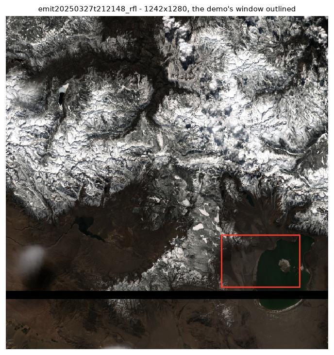

Tetracorder on an EMIT L2A scene
A 300×200 window of granule emit20250327t212148, run end to end
through tetrapy: convolve the USGS spectral library onto the scene's channels,
set up and run Tetracorder, aggregate the results into L2B mineral products.
The pipeline writes here as it goes. Nothing yet.
The input


This is a subset. Running a whole granule is the same
command against a bigger file — point data.rfl and
data.rfluncert in the config at it. Expect roughly half an hour
rather than nine minutes: measured on this hardware a full 1242×1280
granule took about 34 minutes against roughly 9 for this window, so 26× the
pixels cost under 4× the time. Tetracorder emits its ~2,400 mineral
products whatever the scene size, and on a small scene that fixed cost is
almost the whole runtime.
The window is 300 samples wide on purpose. Tetracorder
writes its product rasters with a VICAR label padded to at least 299 bytes,
but the matching ENVI header is generated separately and computes the offset
as just samples, without that padding. The two agree only at
299 samples or more. Narrower, and every product raster is read two rows out
of alignment — label text in the top rows, the last rows of real
results lost off the end. Full EMIT granules are 1242 wide and never meet
it; a small crop can.
The scene is an ENVI raster: a flat binary cube of
numbers with no metadata inside it at all, paired with a plain-text
.hdr file that says how to read it. Nothing is compressed and
nothing is self-describing — strip the header and the cube is an
anonymous block of bytes. Tetracorder consumes a pair of them, reflectance
and its per-channel uncertainty.
The first group of fields below is what any reader
needs to make sense of the bytes: the shape of the cube, how wide each
number is, and the order the values were written in. The second group is
what this pipeline needs. convolve reads
wavelength and fwhm straight out of this header
to build the grid it resamples the USGS spectral library onto, so the
library ends up sampled exactly like the instrument that took the scene.
Both are mandatory and must be the same length; a header missing either is
rejected. If wavelength units is absent the values are assumed
to be nanometres, which is a quiet way to be wrong by a factor of 1000.
What the mineral names are
The names below come straight from Tetracorder. Each is the
TITLE= field of an entry in its cmd.lib.setup
file, which is the title of the USGS spectral library record that entry
matches against — so a name identifies a specific measured
spectrum, not a mineral in the abstract. That is why several entries
name mixtures, and why the same mineral can appear more than once at
different grain sizes or purities.
The smaller line under each name is the identifier
Tetracorder knows the material by, and the library and record number the
spectrum came from; the name itself links to the USGS metadata page for
that record. aggregate looks each one up in
tetrapy/data/v6.00a6.csv, which export-matrix
generates from those same command files, purely to assign the stable
numeric value stored in the raster. Nothing is renamed along the way.
Worth knowing if you take the products elsewhere: those
numbers are all the NetCDF holds. agg.nc carries no
variable attributes — no long_name, no CF
flag_values/flag_meanings — so it is not
self-describing. Handed agg.nc alone you cannot tell what
mineral ID 8 is; you need the reference matrix beside it. This page reads
the aggregated NetCDF, never Tetracorder's raw per-material rasters, and
then does exactly that lookup.
What the run produced
Two real products, in two formats, for different purposes.
Tetracorder writes a gzipped ENVI raster per material per quantity
— thousands of small files, each with its own .hdr, one
per material it looked for. tetrapy aggregate then reduces
those to NetCDF: the L2B mineral products, where every pixel carries
the identity of its best-matching material and the depth of the feature
that matched. Name aggregate.out_min with a .tif
extension instead and you get GeoTIFF.
results.json is neither of those. It is written
by quicklook.py from agg.nc purely to render this
page — a summary, not a product. Everything below is on disk in the
codespace under ~/tetracorder-demo/output.